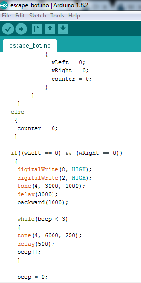
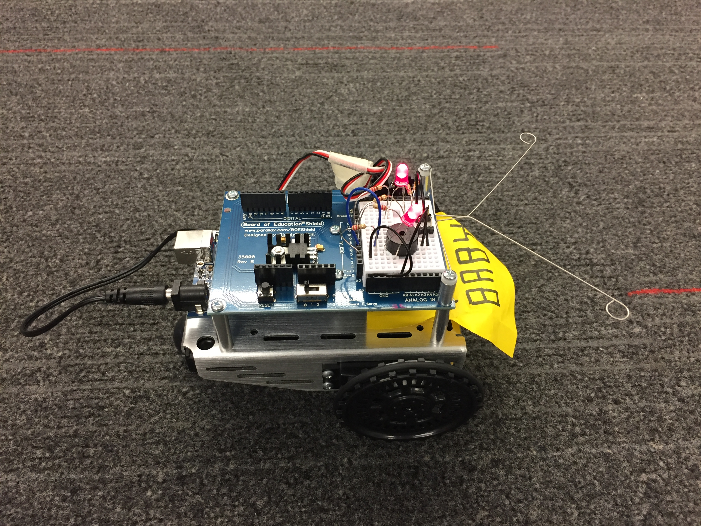

I learned that using our personal experiences, we can desgin robots that can be beneficial to different groups of people as we understand the needs of that specific group. As we share similar problems with other people around the world, our personal challenges become inspirations for us to construct robots that will make daily activities easier to complete for everyone. The robots that we build carry the purpose of serving the community. The current advancement in the field of robotics such as self-driven cars make me excited becuase incorporting robots into our everyday lives is no longer just a dream. Instead, it is slowly becoming a reality. Working in groups to build circuits was helpful as all group members were helping another with certain challenges that we have had. Although we had been helping one another, we could have communicated more. Even when we do not have questions, we could have brainstormed ideas together and gain inspirations from one another.
My partner, Sita, and I worked together on the lightshow by discussing how we vision our lightshow to be.
We helped each other with debugging our codes.
Although we were working together to create the same lightshow, we would sometimes work at different pace.
As a result, we would sometimes have different codes.
The basic pieces of every Arduino sketch:
#include
I learned that the vertical rows (the shorter rows with 5 holes) are connected. I also learned that a piezo can create alternating current. My favorite part of my robot's dance is when it turns 360 degrees because it follows the rhythm of the song that my partner and I selected.
Today I learned how navigate an Arduino with whiskers. I also learned how to control the sound that the robot makes as well as how to incoporate while loops into my Arduino code. My group worked very well together as we had fun while helping each other with our Arduino codes.
 